Fisher symmetry
and the geometry of quantum states
Jonathan A. Gross, Ninnat Dangniam, Carlton M. Caves
Center for Quantum Information and Control, University of New Mexico

Overview
- Goal
- Measure deviations from a reference quantum state with
equal precision
in all directions - Background
- How do deviations in different directions relate?
Different directions
You've never heard of the Millennium Falcon?…It's the ship that made the Kessel Run in less than twelve parsecs.
We will use the concept of statistical distance to naturally relate all the directions in quantum state space
Statistical distance
Quantify distance between two quantum states by how statistically distinguishable they are
More distinguishable: further apart
Less distinguishable: closer together
Example: coin bias
Count the number of intermediary distinguishable states
W. K. Wootters, Phys. Rev. D 23, 357 (1981)Example: coin bias
Count the number of intermediary distinguishable states
W. K. Wootters, Phys. Rev. D 23, 357 (1981)Example: coin bias
Statistical fluctuations
The fluctuations depend on the estimator used
The Cramér–Rao bound gives us an achievable lower bound
This allows us to generally define our statistical distance in terms of the Fisher information (FI):
Fisher information
The FI quantifies the information has about
Multiple parameters
So far we've only discussed fluctuations in 1 "direction"
If you're trying to measure multiple parameters, the FI becomes a matrix
Diagonal elements are the FIs for individual parameters
This matrix can be used as a metric:
Quantum mechanics
Random variable defined by a positive-operator-valued measure (POVM),
We write the FI generated by a particular POVM as
Quantum Fisher information
 S. L. Braunstein and C. M. Caves, Phys. Rev. Lett. 72, 3439 (1994)Quantum Fisher information
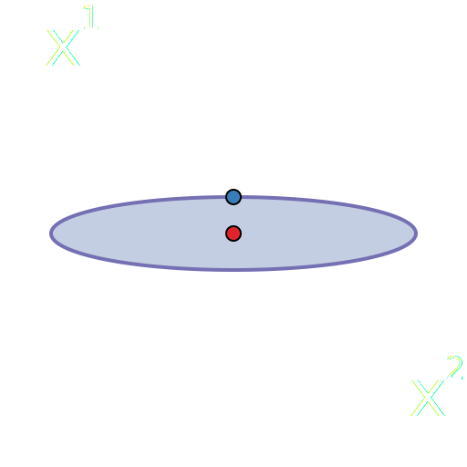 S. L. Braunstein and C. M. Caves, Phys. Rev. Lett. 72, 3439 (1994)Quantum Fisher information
S. L. Braunstein and C. M. Caves, Phys. Rev. Lett. 72, 3439 (1994)Quantum Fisher information
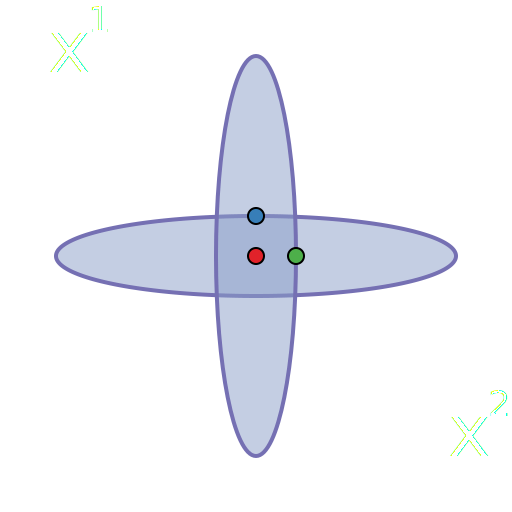 S. L. Braunstein and C. M. Caves, Phys. Rev. Lett. 72, 3439 (1994)Quantum Fisher information
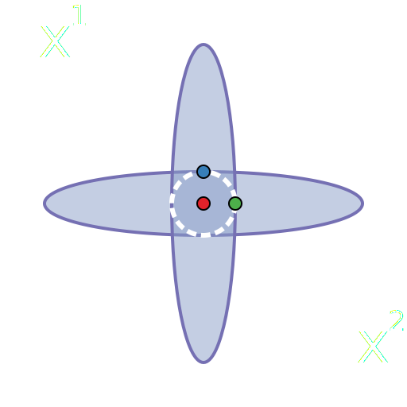 S. L. Braunstein and C. M. Caves, Phys. Rev. Lett. 72, 3439 (1994)State-space geometry
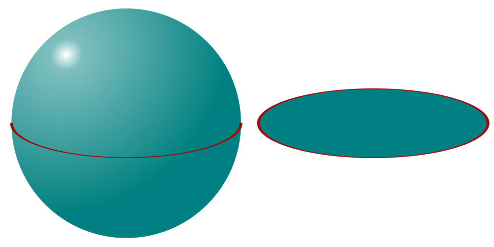Consider equatorial plane of the Bloch ball
As in the simplex case, Euclidean distance doesn't reflect statistical distance
State-space geometry
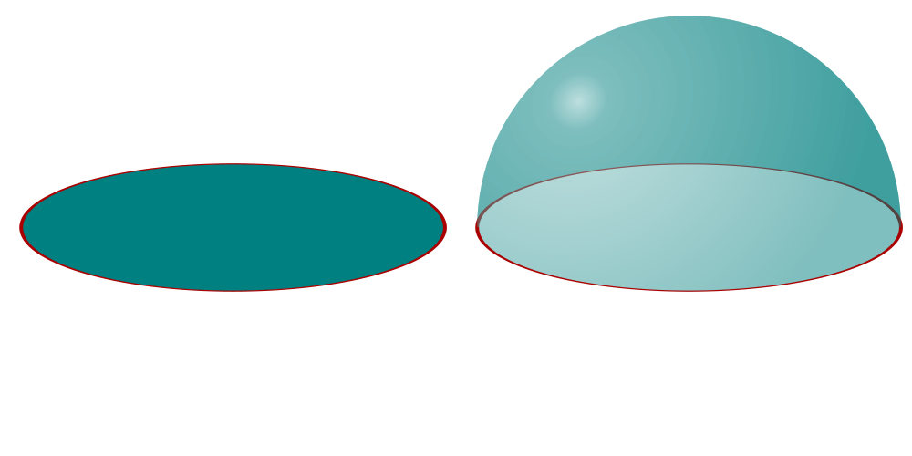Just like the simplex is naturally a semicircle, the Bloch ball is naturally the upper hemisphere of
Simultaneous measurement
QFI gives bounds for individual parameter estimation
The Gill–Massar bound gives us simultaneous bounds on multiple parameters for a -dimensional system
Saturated iff is rank-1
R. D. Gill and S. Massar, Phys. Rev. A 61, 042312 (2000)Gill–Massar bound
Through change of parameters we can set
In this natural parametrization
If we measured all parameters with quantum-limited accuracy
Gill–Massar bound
Fisher symmetry
Can we saturate bound and locally measure all parameters with the same fraction of the quantum-limited accuracy?
We call a measurement with this property a Fisher-symmetric measurement (FSM)
Fisher symmetry
Fisher symmetry
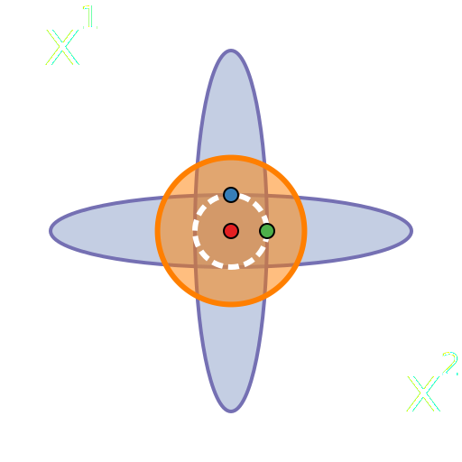Pure states
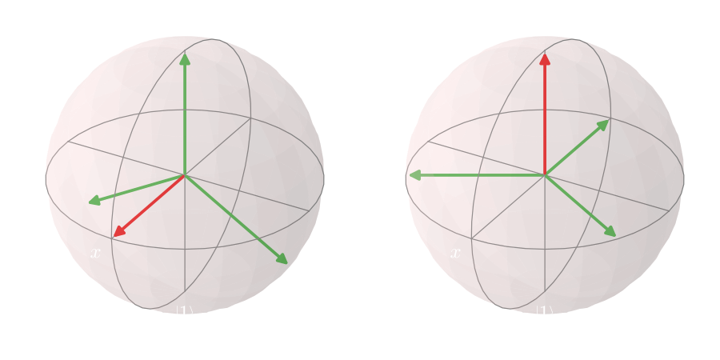Li et al. have shown FSMs to exist for pure states in all dimensions and given an explicit construction
N. Li, C. Ferrie, and C. M. Caves, arXiv:1507.06904Mixed states
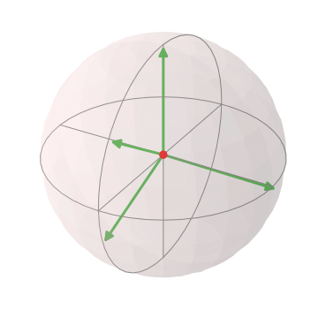A symmetric informationally complete POVM (SIC-POVM) is a FSM at the maximally mixed state, provided it exists
Mixed states
For qubits, can explicitly calculate the FSM for an arbitrary mixed state
POVM
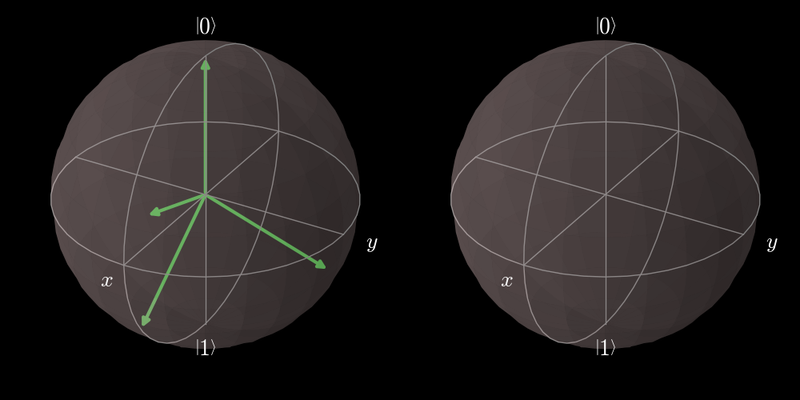POVM
POVM
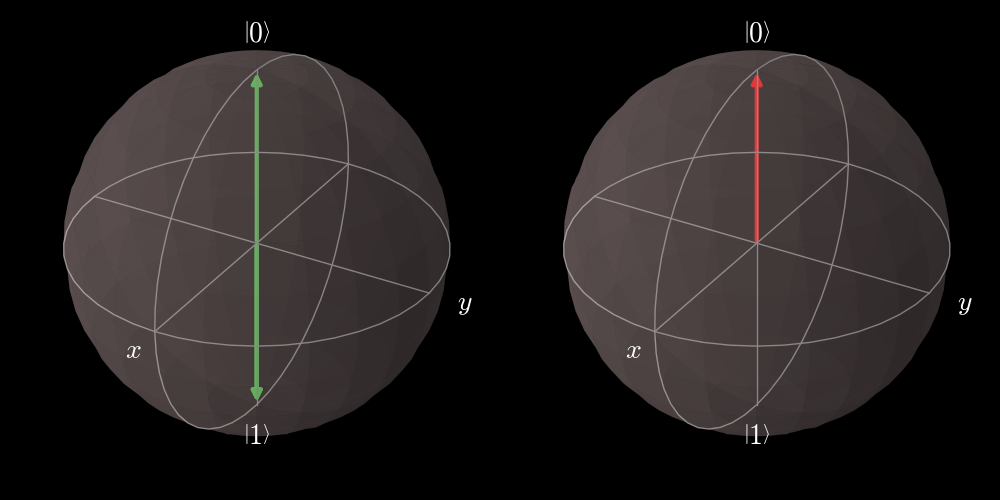Back to the coin
I need more coin!"Walken-Cowbell". Licensed under Fair use via Wikipedia.
{kind=link}
{kind=link}
Back to the coin
POVM
POVM
POVM
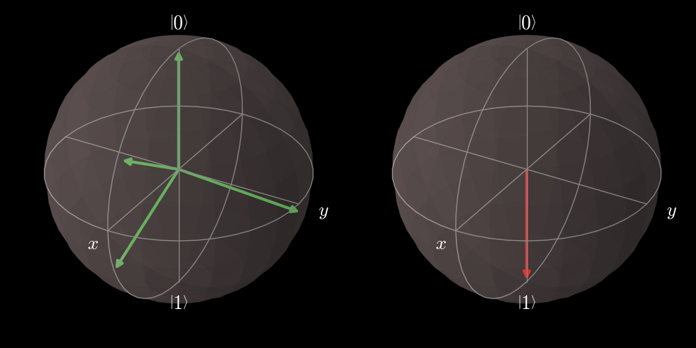Higher dimensions
SIC-POVMs are hard to find, so it looks like FSMs are going to be hard to find (if they exist at all)
Easier problem (?): given a SIC-POVM, can one transform it to be a FSM at an arbitrary state?
Since FSMs are intimately related to the metric, parallel transport recommends itself as a metric-dependent means of transforming objects on state space
Parallel transport
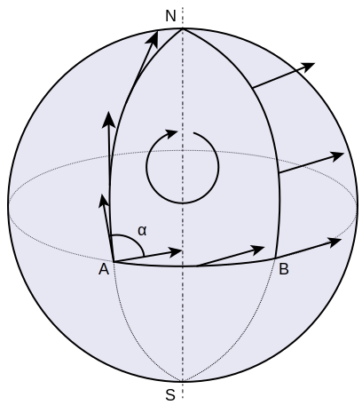"Parallel Transport" by Fred the Oyster - . Licensed under CC BY-SA 4.0 via Commons
{kind=link}
{kind=link}
Parallel transport
Need to associate operators with vectors/covectors
POVM elements naturally correspond to covectors
Preliminary results
Naïve parallel transport does not work (doesn't preserve positivity or rank of POVM elements)
Where does this leave us?
What we've done so far
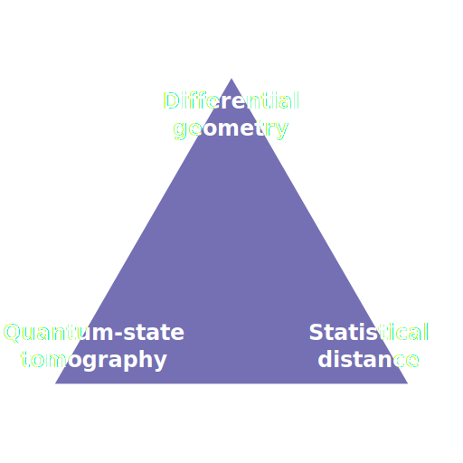Future directions
Several possible things to try moving forward
- Try a different metric
- Try manipulating more natural objects
- Attack the problem perturbatively
Thanks!
Special thanks to Adrian, Jim, Qi, Rick, Matt, Travis, and Ninnat